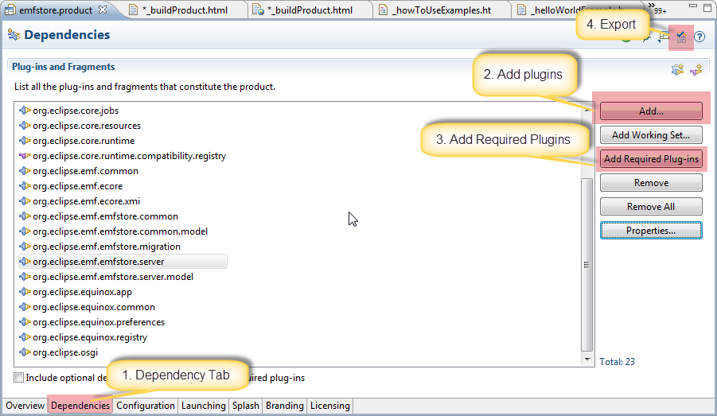

EMFStore - Build your own server product
This tutorial describes how to build your own product with your custom
model based on EMFStore.
We need to get a product file as a
template to get started, it can be downloaded from our git
repository. Based on this file we can start to configure a
product for your server. Open the product file with the product editor
and go to the dependency tab. On this tab add all your model
plugins (no need to add the .edit and .editor plugins also). Change the
product name a.s.o as appropriate and select to export the product
(upper right corner in the product editor). If you have the deltapack
installed you can even export for platforms different than your own
operating system.
